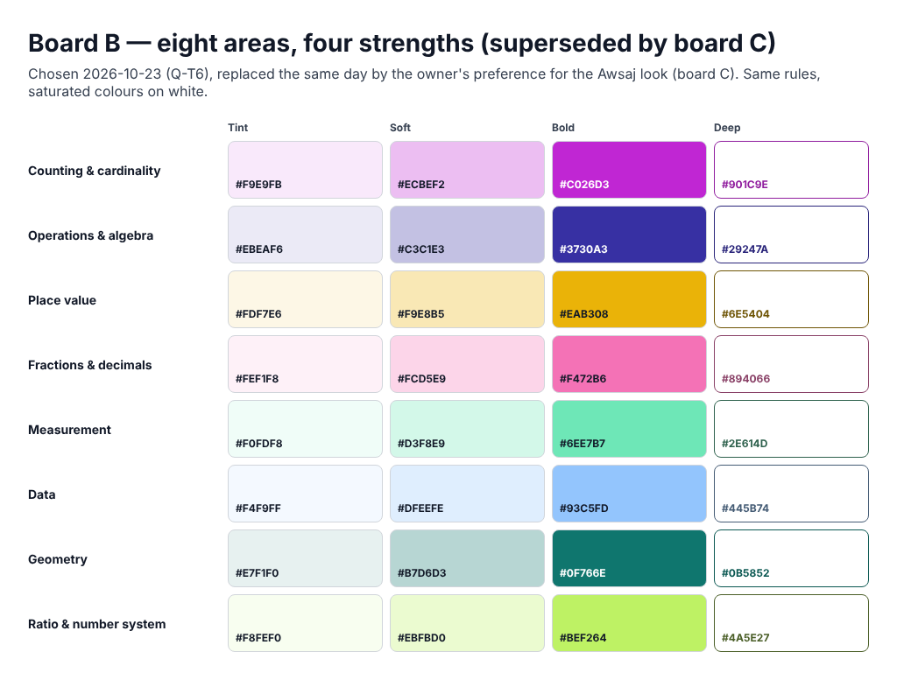
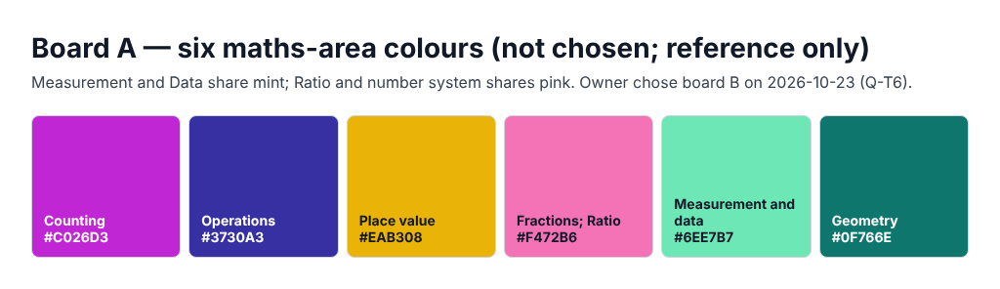

Teacher site 2.0 · T1 · colour
Muted, painted colours from the school’s maths site.
Eight maths areas, each in four strengths. Colour only ever means the maths area; the one main action is solid warm ink; everything else is calm cream and ink. The rules are IMPROVEMENT_PLAN §2.7; the colours are board C, taken from the school’s Awsaj maths site (owner, 2026-10-23: “I like these colors style more”) and moved only as far as the colour-blind and contrast rules need.
Every swatch below is computed in this page from the bold colour with the plan’s ramp rules on the cream page (colour.js, a port of colour.py), and node tests/scripts/ws-teacher-tokens.cjs checks the same numbers and the mock-up’s tokens.css. Contrast figures are WCAG ratios; ΔE is CIEDE2000.
Tint (10 %) is a group’s background · soft (30 %) a filter chip at rest · bold the card edge, header band, tray chip and selected chip · deep the area’s own text and outline. Tint and soft always take warm ink text (#1A1614).
Page #0F0E0C. Tint = 18 % and soft = 40 % of the bold over the page with cream text; the fourth strength is a light version (bold mixed with cream), ≥ 7 : 1 on the dark tint. Chip outlines are #E8DFD2.
Every chip has a 1 px outline (deep in light mode, #E8DFD2 in dark). Selected = the bold fill + ✓ + a 2 px ring. Slate (Mixed, Words, No standard) always has a dashed outline and its label.
The bold colours as seen with normal vision, deuteranopia and protanopia (Machado 2009 matrices, severity 1.0), and the closest pairs. Areas that share a single-grade list must be ≥ 12 apart under both simulations; any other pair ≥ 8 (in lists across grades the grade pill, the area name and the icon tell them apart).
Board B (saturated, on white) was chosen on 2026-10-23 and replaced the same day by board C; board A (six areas) was not chosen. Both are kept as static pictures so the choice can be revisited; the mock-up uses board C only.

